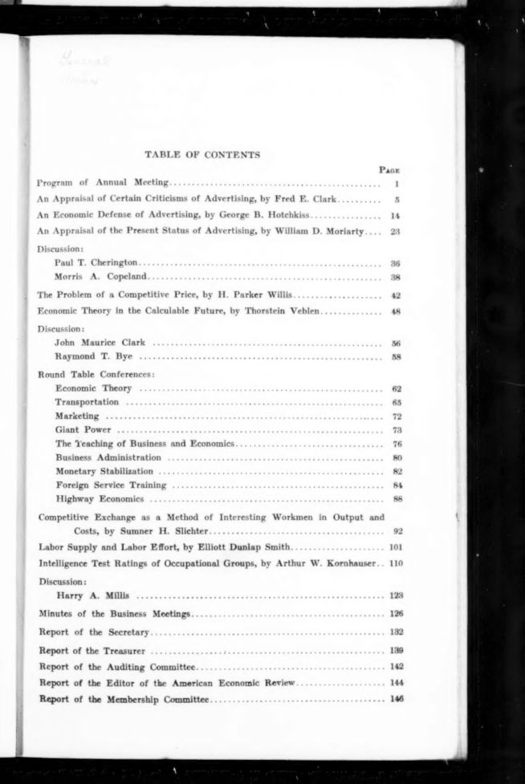

Slichter, 1924: por que o salário não interessa o operário nos custos
Leitura: 5 min
Slichter mostra que a troca competitiva só motiva o operário quando a empresa consegue medir e premiar o desempenho individual, e que medição, capatazes e desemprego costumam impedir isso.


Nenhuma queixa é mais universal entre os empregadores, começa Sumner H. Slichter, do que a de que os operários não se interessam pela produção nem pelos custos. Em vez de cooperar, restringem a produção e escondem quanto ela fica abaixo do possível. A queixa, diz, é confirmada por quem trabalhou como assalariado, pela comissão das Federated American Engineering Societies sobre o desperdício na indústria e pelos estudos de tempos, que quase sempre mostram o tempo habitual de trabalho muito maior que o necessário.
A doutrina aceita supõe o contrário: o desejo de lucro levaria o patrão a pagar mais e a dar trabalho mais estável aos mais eficientes, e os operários se esforçariam para agradar. Para Slichter, a contradição revela uma falha séria da troca competitiva como método de organizar a produção, justamente o método em que a teoria, desde Smith, mais confiou. A confiança foi tanta que não havia ainda um tratado abrangente sobre a teoria da produção; os alicerces estariam em partes da obra de Veblen, nos estudos do ciclo e no trabalho de J. M. Clark sobre custos indiretos. O texto foi lido em Chicago, na sessão sobre problemas psicológicos da indústria, em 31 de dezembro de 1924.
Dá para medir o desempenho de cada um?
Com o operário individual como unidade de remuneração, três condições precisam valer: a administração deve ser capaz de basear o pagamento de cada um no seu desempenho, deve querer fazê-lo, e o operário deve querer responder. A primeira já esbarra em limites. Em muitos trabalhos, como construção e manutenção, não há medida comum para a contribuição individual.
A qualidade se mede só pela proporção de peças recusadas na inspeção, e pagar por ela incentiva o operário apenas a passar pelo inspetor. O desgaste de máquinas usadas por vários homens ou em vários turnos não tem dono. E a atitude é quase imensurável, porque quem sabe que está sendo avaliado mantém a aparência de interesse.
As empresas querem premiar o mérito?
É comum cortar as tarifas por peça quando os ganhos sobem, e poucas empresas pagam bônus por redução de refugo ou por sugestões, embora um fabricante de artigos de borracha tenha economizado 84.000 dólares em 1923 com sugestões de empregados, nove décimos delas vindas da fábrica. Quem lida com os operários é o capataz, sobrecarregado e de capacidade limitada, mais preocupado em manter o emprego do que em ser promovido. Por isso joga seguro: evita diferenciais de salário que gerariam ciúmes, não promove o bom operário porque precisa dele no posto e vê sugestões como crítica à sua gestão.
Há ainda a política de pressão, que obtém mais trabalho cortando tarifas e ameaçando com a demissão. Ela compensa, diz Slichter, porque o trabalhador que deixa um emprego tem grande dificuldade em achar outro e não tem como comparar o esforço exigido em empregos diferentes.
O operário responde ao incentivo?
Mesmo com prêmio ao mérito, a resposta pode ser fraca. O operário teme que, depois de mostrar o que pode fazer, a tarifa seja cortada; aumentos para alguns deixam outros ressentidos; erros na fixação de tarifas por estudo de tempos tendem a favorecer o empregador, porque é mais fácil omitir elementos do que incluir supérfluos, e na indústria de roupas femininas de Cleveland, onde os estudos de tempos podem ser revistos, esses erros não se mostraram raros. Sobretudo, com a demanda instável, muitos perdem o emprego todo ano por falta de serviço, e é natural que tentem fazer o trabalho limitado render o máximo de emprego.
“Essencialmente, é um conflito entre a empresa individual e o sistema econômico, a primeira premiando mais produção, o segundo às vezes penalizando-a.” (Essentially it is a case of conflict between the individual business enterprise and the economic system, the former rewarding more production, the latter sometimes penalizing it.)
O que pode mudar?
Para o futuro imediato, Slichter espera que a troca competitiva se torne mais eficaz, com novos métodos de medição, bônus de grupo onde a medida individual for inviável e administrações mais dispostas a pagar pelo mérito. Mas, para muitas coisas na indústria, outras forças além do interesse próprio terão de atuar. Quando a teoria da produção for escrita, conclui, dividirá as atividades dos operários entre as que podem ser medidas, onde a troca competitiva terá papel importante, e as que não podem, que exigirão discutir outros motivos.
Na minha leitura
Na minha leitura, o texto antecipa temas que a teoria dos contratos de trabalho formalizaria depois: desempenho não observável, tarefas múltiplas em que pagar por uma dimensão distorce as outras e um intermediário, o capataz, cujos interesses não coincidem com os da empresa.
O argumento do desemprego liga o chão de fábrica ao sistema econômico: para Slichter, o que a empresa premia o sistema às vezes pune, e por isso a estabilidade do emprego aparece no texto como condição para que o incentivo funcione.
Glossário
- Troca competitiva
- organização da atividade econômica pela compra e venda a preços de mercado, incluindo o salário.
- Pagamento por peça
- salário proporcional à quantidade produzida.
- Política de pressão (drive policy)
- obtenção de mais trabalho por corte de tarifas e ameaça de demissão, em vez de recompensas.
- Bônus de grupo
- prêmio calculado sobre o desempenho de uma equipe ou departamento.
- Estudo de tempos
- medição do tempo de cada elemento de uma tarefa para fixar tarifas e padrões.
Fontes
- Competitive Exchange as a Method of Interesting Workmen in Output and Costs — Sumner H. Slichter (Cornell University) (pp. 92–100). Internet Archive (número completo, PDF)
- Edição completa, com os demais artigos: Nº 190 do Arquivo.
Documento em domínio público (EUA, publicado antes de 1931), via JSTOR Early Journal Content e Internet Archive. Resumo e comentário do autor deste site, sem afiliação com a American Economic Association. Encontrou um erro? Escreva: a correção é publicada no próprio texto, com data.
← Veblen, 1924: a economia como ciência dos negócios ↑ Nº 190 · Chicago, 1924: publicidade, preço competitivo, o futuro da teoria e o esforço do operário Smith, 1924: oferta de trabalho é também esforço →